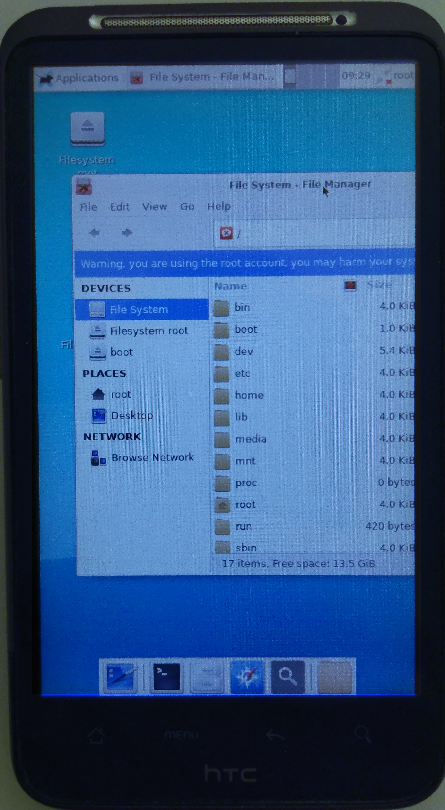

HTC Desire HD (htc-ace)
|
 HTC Desire HD | |
| Manufacturer | HTC |
|---|---|
| Name | Desire HD |
| Codename | htc-ace |
| Released | 2011 |
| Category | testing |
| Original software | Android 2.2 on Linux 2.6.32 |
| Hardware | |
| Chipset | Qualcomm MSM8255 Snapdragon S2 |
| CPU | 1.0 GHz Scorpion |
| GPU | Adreno 205 |
| Display | 480x800 LCD |
| Storage | 1.5 GB |
| Memory | 768 MB |
| Architecture | armv7 |
{kind=link}
| USB Networking |
Works
|
|---|---|
| Flashing | |
| Touchscreen |
Works
|
| Display |
Works
|
| WiFi |
Works
|
| FDE | |
| Mainline | |
| Battery | |
| 3D Acceleration | |
| Audio | |
| Bluetooth | |
| Camera | |
| GPS | |
| Mobile data | |
| SMS | |
| Calls | |
| USB OTG | |
| NFC | |
| Accelerometer | |
|---|---|
| Magnetometer | |
| Ambient Light | |
| Proximity | |
| Hall Effect | |
| Ir TX | |
|---|---|
| TrustZone | |
Contributors
- Victor9
- mpiatka
Users owning this device
- Daviewales
- Jja2000
- Maxnet (Notes: Trying to get the bootloader unlocked)
- NHellFire
HBOOT update
It is likely you will need to do an RUU update before the bootloader can be unlocked.
To check, run adb reboot-bootloader and check your HBOOT version.
It needs to be at least 2.00.0029 to be able to unlock.
If your HBOOT version is less than 2.00.0029, do an RUU update as follows:
- Go to HTCdev/Unlock Bootloader
- Login with your HTCdev account. (Create one if needed.)
- Select HTC Desire HD.
- Follow the instructions to download the correct RUU update for your device. (Hint: Go to About phone -> Software information -> Software number to determine your ROM version. Then compare this version to the versions in the table, and download the matching one.
- You will note that the RUU update is a Windows executable. If you have access to a Windows machine, you may further note that it doesn't work! However, there is another way which works, and has the added bonus of Linux and Mac compatibility! We simply need to follow some instructions from Petter Reinholdtsen's blog. I've reproduced these below.
- Build and install unruu from source. You will need unshield as a dependency. (Your package manager probably has a version of unshield available!)
- Run
./unruu /PATH/TO/UNRUU_UPDATE.exee.g. For me it was./unruu PD9810000_Ace_Sense30_S_hboot_2.00.0029.exeThis will create a file calledrom.zipin the current directory. - Now flash the HBOOT update!
adb reboot-bootloader fastboot oem rebootRUU fastboot flash zip rom.zip fastboot flash zip rom.zip fastboot reboot
- To check that this worked, just run
adb reboot-bootloaderagain and check that your HBOOT version is at least 2.00.0029.
How to unlock
Assuming that your HBOOT version is at least 2.00.0029 (see previous section on HBOOT update), follow the unlock instructions on HTCdev:
- Enter fastboot mode. (See instructions below.)
- If you entered the bootloader using the phone buttons, select FASTBOOT, then connect the phone to your computer. You are aiming for the words FASTBOOT USB to be highlighted in red on the screen. If you entered the bootloader using
adb reboot-bootloader, FASTBOOT USB should already be highlighted in red. - Get your device identifier token by running
fastboot oem get_identifier_token 2>&1 | sed 's/(bootloader) //' - Paste the identifier token into the text box titled 'My Device Identifier Token', then submit the form.
- You will shortly receive an email with a link from HTCdev with an attachment called
Unlock_code.bin - Save the attachment, then run
fastboot flash unlocktoken Unlock_code.bin - The phone will ask to confirm bootloader unlock. Select 'Yes' using the volume buttons, then press the power button to confirm.
How to enable USB debugging (required for adb commands)
Assuming you're running Android 2.3.5:
Enable USB debugging from: Settings -> Applications -> Development -> USB debugging
adb command to get device properties
adb shell getprop
Useful greps include: adb shell getprop | grep 'ro.bootloader\|ro.product\|ro.build'
But there's plenty more information if you don't grep!
How to enter fastboot mode
Volume Down→Power
Press the Buttons to enter the Bootloader and select Fastboot.
If this doesn't work, first go to Settings -> Power and disable 'fastboot', then try again.
Alternatively, connect the phone to your computer and run adb reboot-bootloader.
What works
- Display (framebuffer), 16 bit color depth
- Touchscreen
- USB networking
- vibrator
- X11 (tested with xfce4 and sxmo)
Audio
Using ucm configuration files from [1] it is possible to turn on the speaker, which then produces a very faint noise. However, trying to play sound using aplay or speaker-test does not work.